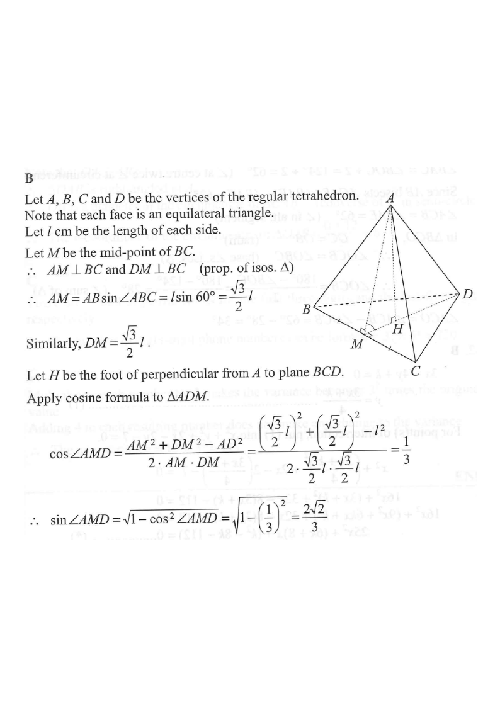

Apex ABase ABC (equilateral)Hidden edges (dashed)Mid-point M of BCFoot H / height AH∠AMD = 70.5°
Question & Solution
[2013 MC #40]
If the height of a regular tetrahedron is $2\text{ cm}$, then the volume of the tetrahedron is
A. $2\text{ cm}^3$
B. $\sqrt{3}\text{ cm}^3$
C. $\sqrt{6}\text{ cm}^3$
D. $3\sqrt{3}\text{ cm}^3$

Figure (original exam diagram)
STEP 1 · Set up the tetrahedron
Let $ABCD$ be the regular tetrahedron with every edge of length $l$ cm. Since each face is equilateral, every edge is equal.
Take $A$ as the apex and the equilateral triangle $BCD$ as the base. Let $H$ be the foot of the perpendicular from $A$ to the plane $BCD$.
The given height is $AH = 2$ cm.
Because the tetrahedron is regular, $H$ is the centroid / circumcentre of the equilateral base $BCD$.
STEP 2 · Work in a side face
Altitude of an Equilateral Triangle\(h=\dfrac{\sqrt{3}}{2}a\)Each face has side \\(l\\), so \\(AM=DM=\\dfrac{\\sqrt{3}}{2}l\\) and both are perpendicular to \\(BC\\).
Let $M$ be the mid-point of $BC$. In the equilateral triangle $ABC$ of side $l$, the altitude is
$$AM = AB\sin 60^\circ = \frac{\sqrt{3}}{2}\,l$$
Similarly in the equilateral triangle $BCD$,
$$DM = \frac{\sqrt{3}}{2}\,l$$
$AM\perp BC$ and $DM\perp BC$ (properties of isosceles triangles), so $AM$ and $DM$ are the two altitudes meeting at $M$.
STEP 3 · Find ∠AMD (cosine formula)
Cosine Formula\(\cos C=\dfrac{a^{2}+b^{2}-c^{2}}{2ab}\)In \\(\\triangle AMD\\) the three sides \\(AM\\), \\(DM\\) and \\(AD=l\\) are known, so the included angle \\(AMD\\) follows.
Apply the cosine formula in $\triangle AMD$ with $AD = l$:
Volume of a Pyramid\(V=\dfrac{1}{3}\times\text{base area}\times\text{height}\)The tetrahedron is a pyramid with equilateral base \\(BCD\\) and height \\(AH=2\\), so \\(V=\\dfrac13\times\\dfrac{3\\sqrt3}{2}\times2=\\sqrt3\\).
The base $BCD$ is equilateral with side $l=\sqrt6$, so
$$\text{Area of } \triangle BCD=\frac12\cdot BC\cdot DM=\frac12\cdot\sqrt6\cdot\frac{\sqrt3}{2}\cdot\sqrt6=\frac{3\sqrt3}{2}$$
Therefore the volume is
$$\text{Volume}=\frac13\times\text{Area of }\triangle BCD\times AH=\frac13\times\frac{3\sqrt3}{2}\times 2=\sqrt3\ \text{cm}^3$$
Alternative: for a regular tetrahedron, $V=\dfrac{l^{3}}{6\sqrt2}$; with $l=\sqrt6$ this gives $\dfrac{6\sqrt6}{6\sqrt2}=\sqrt3$.
FINAL ANSWER
B. $\sqrt3\ \text{cm}^3$
NOTE
(1) There are other ways to relate the edge length to the height of a regular tetrahedron — try to explore them.
(2) The formula "Area $=\tfrac12 ab\sin C$" and Heron's formula can also be used to find the base area of the tetrahedron.
PRACTICESimilar question — try it yourself
Question. The height of a regular tetrahedron is \\(3\\) cm. Find (a) its edge length and (b) its volume, giving each answer correct to 3 significant figures.
Show the worked solution
Step 1. Let the edge be \\(l\\), with apex \\(A\\), equilateral base \\(BCD\\) and height \\(AH=3\\). In a face of side \\(l\\) the altitude is \\(AM=DM=\\dfrac{\\sqrt{3}}{2}l\\).
Step 2. By the cosine formula in \\(\\triangle AMD\\), \\(\\cos\\angle AMD=\\dfrac{\\frac34l^{2}+\\frac34l^{2}-l^{2}}{2\\cdot\\frac{\\sqrt3}{2}l\\cdot\\frac{\\sqrt3}{2}l}=\\dfrac13\\), so \\(\\sin\\angle AMD=\\dfrac{2\\sqrt2}{3}\\).
Step 3. Then \\(AH=AM\\sin\\angle AMD=\\dfrac{\\sqrt3}{2}l\\times\\dfrac{2\\sqrt2}{3}=\\dfrac{\\sqrt6}{3}l\\), so \\(3=\\dfrac{\\sqrt6}{3}l\\) and \\(l=\\dfrac{9}{\\sqrt6}=\\dfrac{3\\sqrt6}{2}\\approx3.67\\) cm.
Step 4. Base area \\(=\\dfrac{\\sqrt3}{4}l^{2}=\\dfrac{\\sqrt3}{4}\\times\\dfrac{27}{2}=\\dfrac{27\\sqrt3}{8}\\) cm\\(^{2}\\).